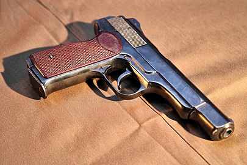

9-мм автоматический пистолет Стечкина (АПС, Индекс ГРАУ — 56-А-126) — автоматический пистолет,
разработанный в конце 1940-х — начале 1950-х годов конструктором И. Я. Стечкиным и принятый на
вооружение Вооружённых Сил СССР в 1951 году, одновременно с пистолетом Макарова. АПС предназначен
для вооружения офицеров, принимающих непосредственное участие в боевых действиях, а также для солдат
и сержантов некоторых специальных подразделений.

История
Разработка пистолета велась с 1948 года поступившим в том же году на работу в ЦКБ-14 молодым инженером Игорем
Яковлевичем Стечкиным, а первый опытный экземпляр был представлен в 1949 году. После утверждения проекта, заводских испытаний, ряда доработок и войсковых испытаний пистолет приняли на вооружение. Оружие могло вести огонь как одиночными выстрелами, так и очередями.
Пистолет АПС предназначался для вооружения офицеров, сержантов, солдат отдельных специальностей и экипажей боевых
машин, которым не полагался по штату автомат или карабин. При этом справедливо считалось, что пистолета ПМ не будет достаточно для самообороны в случае боестолкновения с противником.
Однако эксплуатация пистолета в войсках выявила ряд недостатков — неудобство ношения массивной кобуры-приклада,
крупные габариты оружия и непрактичность ведения автоматического огня. Рукоятка с малым углом наклона требует
некоторого времени для привыкания и мало подходит для «инстинктивной» стрельбы навскидку. Большинство офицеров считало этот пистолет чрезмерно большим и неудобным в повседневном ношении, особенно в условиях мирного времени. Вместе с пистолетом полагалось носить четыре снаряжённых запасных магазина (в каждом — по 20 патронов) в подсумках, что ещё больше отягощало военнослужащего.
В результате в 1958 году АПС был снят с производства, а в 1960-е годы основная часть армейских пистолетов оказалась на складах (хотя на вооружении отдельных категорий военнослужащих, в частности у гранатомётчиков (РПГ-7) и у пулемётчиков (ПК), он находился до начала 1980-х годов).
В то же время АПС, обладающий лучшей точностью стрельбы, меньшей отдачей, меньшим подбросом ствола при стрельбе и
несколько большей огневой мощью, чем ПМ, продолжал использоваться КГБ СССР и военнослужащими некоторых специальностей СпН ГРУ.
В связи с ростом уровня преступности во второй половине 1980-х — 1990-х годах МВД потребовалось более мощное оружие, чем состоявший на вооружении пистолет Макарова. Так как до этого «полицейских» малогабаритных пистолетов-пулемётов в СССР не выпускалось, в качестве временного решения проблемы оказался вполне приемлем пистолет Стечкина. Впоследствии наряду с ним были приняты на вооружение пистолеты-пулемёты под тот же патрон 9×18, тем не менее проверенный «Стечкин» и в наше время сохраняет определённую популярность.
После распада СССР пистолет применялся в ходе различных локальных конфликтов.
так, в ходе боевых действий в Чечне пистолетами АПС в качестве личного оружия самообороны вооружали пилотов и снайперов[источник не указан 2000 дней].
в настоящий момент состоит на вооружении в качестве личного оружия пилотов российской авиагруппировки в Сирии[2]
Описание и характеристики
Пистолет состоит из следующих основных частей:
- рамка со стволом и основанием рукоятки
- спусковая скоба
- ударно-спусковой механизм
- механизм замедления темпа стрельбы
- возвратная пружина
- затворная задержка
- щёчки рукоятки с винтом
- магазин
- затвор с ударником, выбрасывателем и переводчиком-предохранителем
Пистолет штатно комплектуется кобурой-прикладом, деревянной у пистолетов ранних выпусков и прессованной из пластмассы у более поздних.
Эффективная дальность стрельбы составляет:
- при стрельбе одиночными выстрелами с примкнутой кобурой-прикладом — 150 м;
- при стрельбе очередями с примкнутой кобурой-прикладом — 100 м;
- при стрельбе одиночными выстрелами без кобуры-приклада — 50 м.